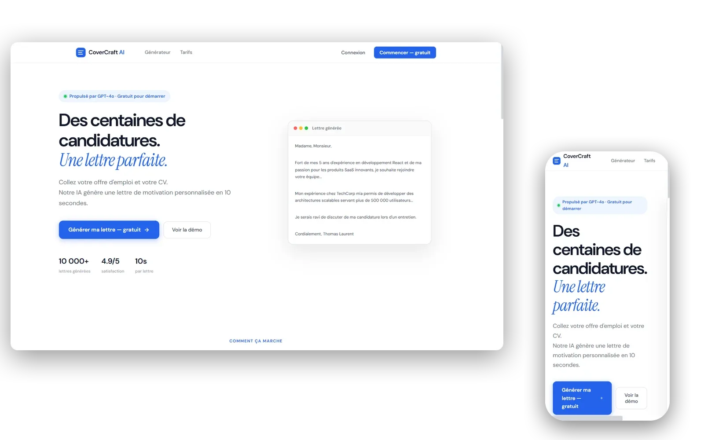

CoverCraft AI
Suite naturelle de CVGenius. Une fois que tu génères un CV, tu te dis : et la lettre ? CoverCraft AI prend ton CV, l'offre d'emploi visée, ton ton préféré, et te sort une lettre de motivation via l'API Gemini. Premier projet où j'ai branché un LLM en production.

La suite logique de CVGenius
Une fois CVGenius en prod, j'avais un signal clair : générer le CV ne suffit pas, il faut aussi la lettre. J'ai préféré en faire une app à part plutôt que de la coller à CVGenius : un focus, un produit, un parcours. Tu colles l'offre, tu colles ton CV, tu choisis un ton, l'IA écrit. Trois minutes, fini.
L'intérêt vrai du projet : brancher une IA en prod
C'est mon premier projet où une API LLM tourne en production (Gemini de Google). Et c'est pas pareil que jouer avec ChatGPT dans un navigateur. Il faut prompter proprement (les trois inputs assemblés dans un prompt structuré), gérer la latence (la requête prend quelques secondes, donc spinner et message clair côté UI), nettoyer le retour (dompurify pour sanitiser le HTML que l'IA pourrait renvoyer), et gérer les coûts (chaque appel à Gemini est facturé, donc l'abonnement Premium n'est pas juste cosmétique, il finance l'API). En 2026, savoir intégrer un LLM en prod, c'est un signal fort pour une alternance.
Le socle réutilisé
Une fois CVGenius en place, j'avais déjà la mécanique Supabase + Stripe + Vercel + React Router. CoverCraft a réutilisé ce socle, ce qui m'a fait gagner des jours : toute la partie auth, paiement, déploiement était déjà rodée. Ajouts spécifiques : @google/genai pour l'API Gemini, dompurify pour la sécurité, jspdf pour le PDF, routes protégées par <ProtectedRoute> pour les pages compte. C'est aussi la première fois que j'ai vraiment apprécié d'avoir un socle réutilisable. Un truc qu'on apprend mieux en le vivant qu'en le lisant.